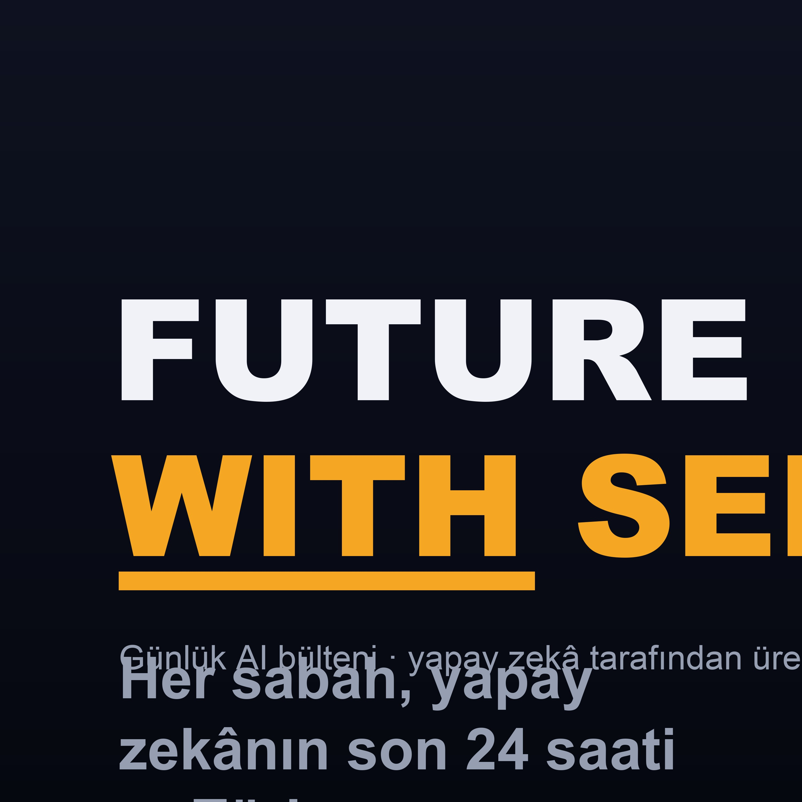

Her sabah, yapay zekânın son 24 saati — Türkçe.
Küresel AI gündeminden günün en önemli gelişmelerini seçip; ne olduğunu, neden önemli olduğunu ve "senin için ne anlama geldiğini" sade bir dille anlatıyoruz. Senaryo, ses ve yayın tamamen otomatik üretiliyor — dinlediğin bülten, anlattığı teknolojinin canlı kanıtı.
Günlük AI bülteni · yapay zekâ tarafından üretildi